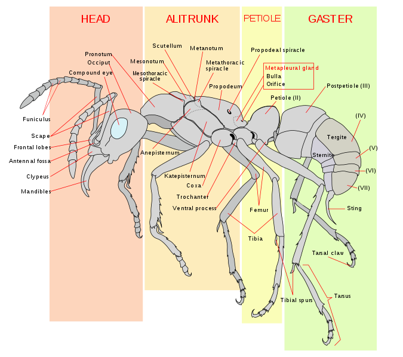

- Kingdom: Animalia
- Phylum: Arthropoda
- Class: Insecta
- Order: Hymenoptera
- Family: Formicoidea
- Species: Formica rufa
 Safari
Safari
The most hardworking creatures on the planet....
Safari
Ants are eusocial insects of the family Formicidae and, along with the related wasps and bees, belong to the order Hymenoptera. Ants appear in the fossil record across the globe in considerable diversity during the earliest part of the Late Cretaceous suggesting an earlier origin. Ants evolved from vespoid wasp ancestors in the Cretaceous period, and diversified after the rise of flowering plants. More than 12,500 of an estimated total of 22,000 species have been classified.They are easily identified by their elbowed antennae and the distinctive node-like structure that forms their slender waists.
Ants form colonies that range in size from a few dozen predatory individuals living in small natural cavities to highly organised colonies that may occupy large territories and consist of millions of individuals. Larger colonies consist of various castes of sterile, wingless females, most of which are workers (ergates), as well as soldiers (dinergates) and other specialised groups.Nearly all ant colonies also have some fertile males called "drones" (aner) and one or more fertile females called "queens" (gynes).The colonies are described as superorganisms because the ants appear to operate as a unified entity, collectively working together to support the colon
Ants are found on all continents except Antarctica, and only a few large islands, such as Greenland, Iceland, parts of Polynesia and the Hawaiian Islands lack native ant species.Ants occupy a wide range of ecological niches and exploit many different food resources as direct or indirect herbivores, predators and scavengers. Most ant species are omnivorous generalists, but a few are specialist feeders. Their ecological dominance is demonstrated by their biomass: ants are estimated to contribute 15–20 % (on average and nearly 25% in the tropics) of terrestrial animal biomass, exceeding that of the vertebrates. Ants range in size from 0.75 to 52 millimetres (0.030–2.0 in),the largest species being the fossil Titanomyrma giganteum, the queen of which was 6 centimetres (2.4 in) long with a wingspan of 15 centimetres (5.9 in).Ants vary in colour; most ants are red or black, but a few species are green and some tropical species have a metallic lustre. More than 12,000 species are currently known (with upper estimates of the potential existence of about 22,000) (see the article List of ant genera), with the greatest diversity in the tropics. Taxonomic studies continue to resolve the classification and systematics of ants. Online databases of ant species, including AntBase and the Hymenoptera Name Server, help to keep track of the known and newly described species.The relative ease with which ants may be sampled and studied in ecosystems has made them useful as indicator species in biodiversity studies.
Ants are distinct in their morphology from other insects in having elbowed antennae,metapleural glands, and a strong constriction of their second abdominal segment into a node-like petiole. The head, mesosoma, and metasoma are the three distinct body segments (formally tagmata). The petiole forms a narrow waist between their mesosoma (thorax plus the first abdominal segment, which is fused to it) and gaster (abdomen less the abdominal segments in the petiole). The petiole may be formed by one or two nodes (the second alone, or the second and third abdominal segments).

Ants perform many ecological roles that are beneficial to humans, including the suppression of pest populations and aeration of the soil. The use of weaver ants in citrus cultivation in southern China is considered one of the oldest known applications of biological control.On the other hand, ants may become nuisances when they invade buildings, or cause economic losses.
In some parts of the world (mainly Africa and South America), large ants, especially army ants, are used as surgical sutures. The wound is pressed together and ants are applied along it. The ant seizes the edges of the wound in its mandibles and locks in place. The body is then cut off and the head and mandibles remain in place to close the wound.The large heads of the dinergates (soldiers) of the leafcutting ant Atta cephalotes are also used by native surgeons in closing wounds.
Some ants have toxic venom and are of medical importance. The species include Paraponera clavata (tocandira) and Dinoponera spp. (false tocandiras) of South America [180] and the Myrmecia ants of Australia.
In South Africa, ants are used to help harvest the seeds of rooibos (Aspalathus linearis), a plant used to make a herbal tea. The plant disperses its seeds widely, making manual collection difficult. Black ants collect and store these and other seeds in their nest, where humans can gather them en masse. Up to half a pound (200 g) of seeds may be collected from one ant-heap.
Although most ants survive attempts by humans to eradicate them, a few are highly endangered. These tend to be island species that have evolved specialized traits and risk being displaced by introduced ant species. Examples include the critically endangered Sri Lankan relict ant (Aneuretus simoni) and Adetomyrma venatrix of Madagascar.
It has been estimated by E.O. Wilson that the total number of individual ants alive in the world at any one time is between one and ten quadrillion (short scale) (i.e., between 1015 and 1016). According to this estimate, the total biomass of all the ants in the world is approximately equal to the total biomass of the entire human race.[185] Also, according to this estimate, there are approximately 1 million ants for every human on Earth